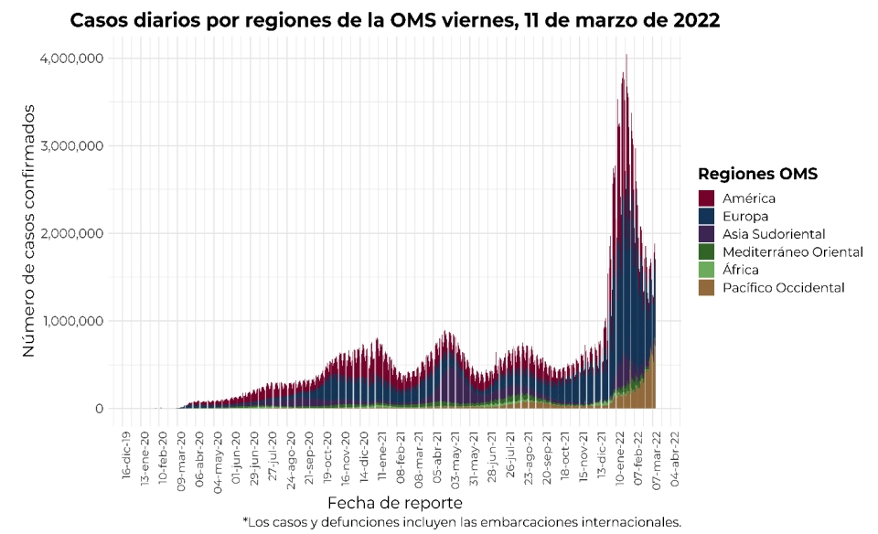
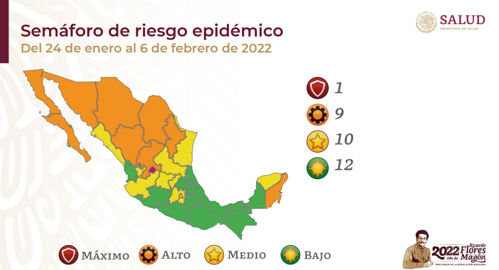
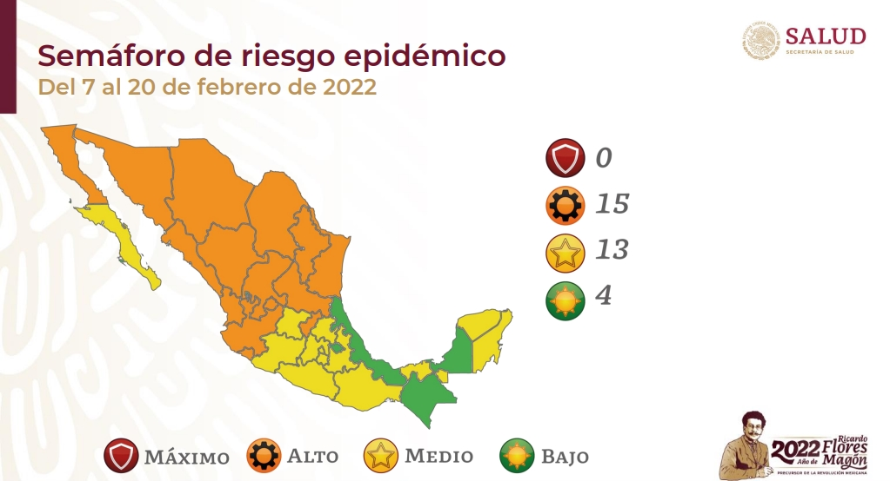
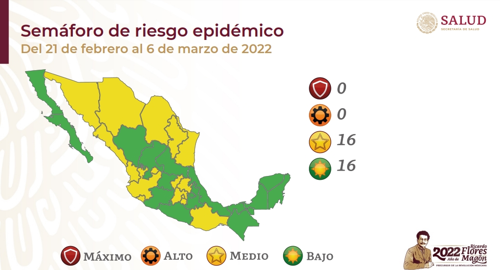
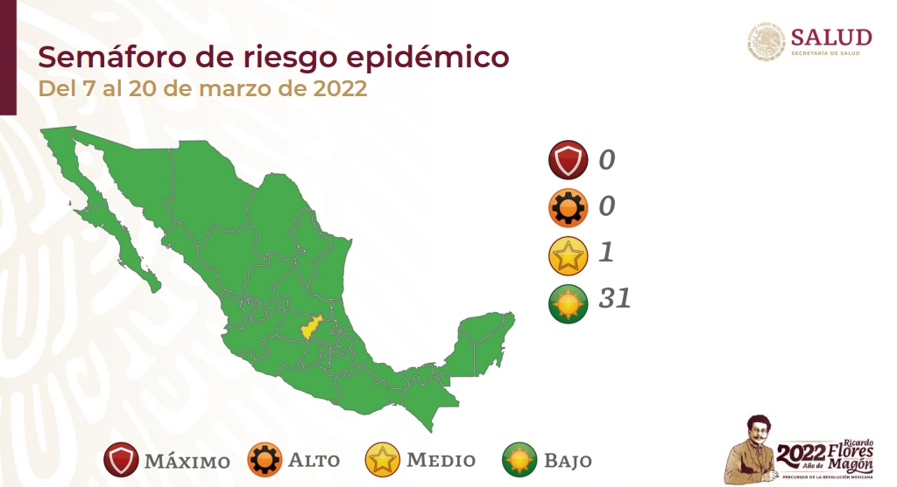
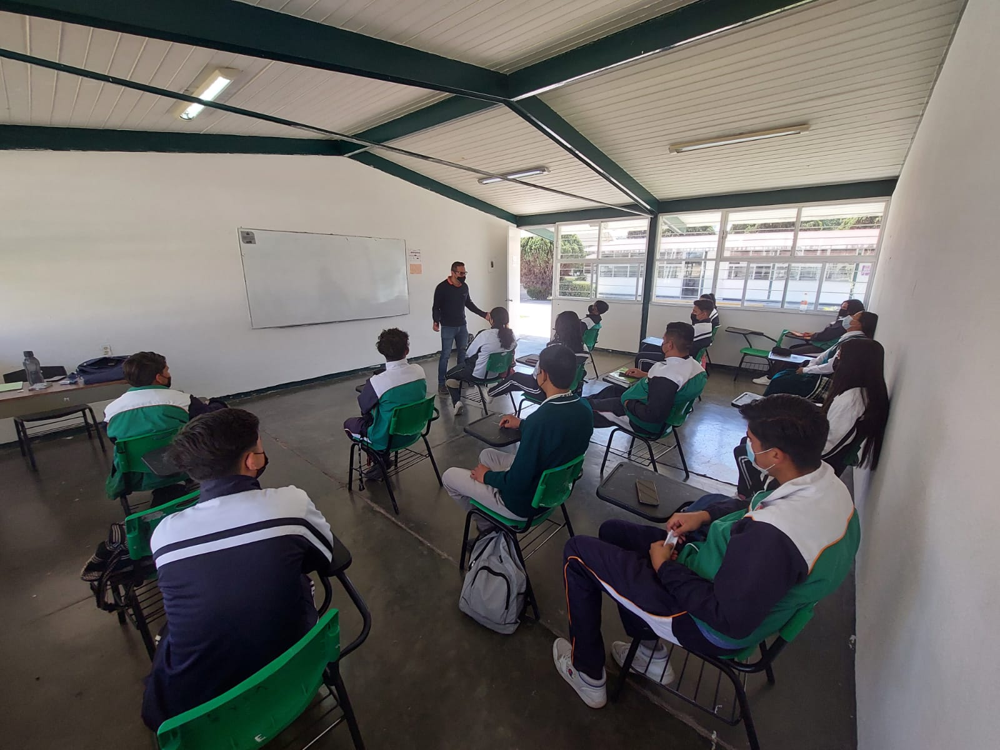
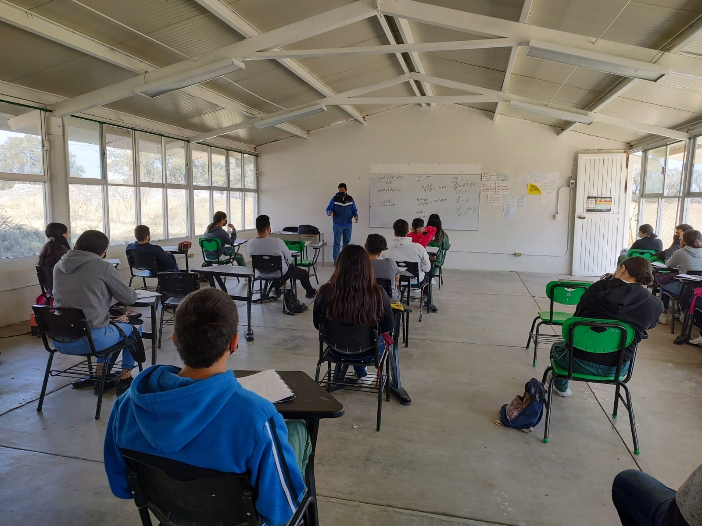
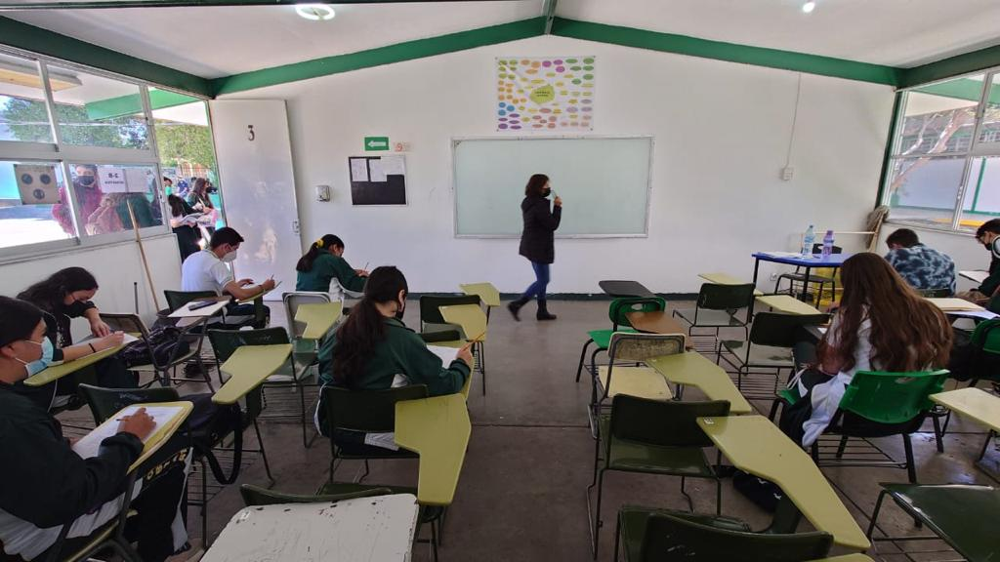
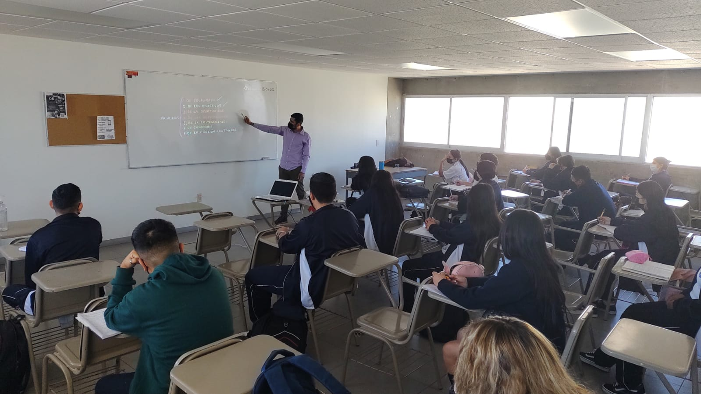

DGETAyCM Aguascalientes
Regreso ordenado y seguro 2022
M.C. Héctor René Becerril Cejudo 18 de marzo de 2022
Resumen
Actualmente dos planteles de Aguascalientes operan en modo
presencial al 100%. El resto siguen alguna modalidad mixta o híbrida
en esquemas de horarios escalonados,
incrementando poco a poco la proporción presencial de acuerdo a
las condiciones de pandemia. Recordemos que todavía a inicios de
febrero de 2022, el estado de Aguascalientes era la única entidad
federativa en semáforo rojo.
El inicio de 2022 estuvo marcado por un aumento
en la tasa de contagios de Covid-19, tal
como se puede observar en la Figura 1. Dicho crecimiento
se vino observando a
partir del mes de diciembre de 2021, y los efectos máximos
se alcanzaron hacia las últimas
semanas del mes de enero y las primeras semanas de febrero de 2022.

Fig 1. Comportamiento mundial de Covid 19, actualización 11 de marzo 2022. Fuente:
Gobierno de México, 2022.
En México se observaron estos efectos
sobre la mayoría de las entidades federativas, llegándose a
alcanzar el nivel de semáforo rojo en Aguascalientes y
anaranjado en los estados del norte y centro-norte; esto durante
enero y febrero de acuerdo con los datos oficiales (Figura 2).




Fig 2. Desarrollo del semáforo de riesgo 2022. Fuente:
Gobierno de México, 2022.
La mayor cantidad de contagios en trabajadores de
la DGETAyCM en Aguascalientes se registraron entre mediados de enero y principios
de febrero (Figura 3). Lamentablemente se tuvo el deceso de una compañera
docente el día 17 de febrero. Todo lo anterior tuvo impacto entre
las comunidades escolares de los planteles en la entidad,
lo que derivó en sesiones de los comités de salud para
discutir las estrategias más prudentes para el arranque
de las actividades.
Fig 3. Comportamiento de contagios entre trabajadores de la
DGETAyCM en Aguascalientes. El
crecimiento de la curva corresponde con lo que se observó en la Figura 1 en
la tendencia mundial para inicio de este año.
Actualmente, en el estado de Aguascalientes, la mayoría de los planteles
de la DGETAyCM se encuentran operando en modalidad mixta o híbrida, que refiere
a distintas combinaciones de estrategias presenciales y virtuales
que son adaptables en el tiempo y espacio para la construcción
de un regreso paulatino a las aulas que sea ordenado y seguro (Figura 4),
siguiendo siempre las recomendaciones de higiene y sana distancia.
Con esto se busca, por un lado, asegurar el servicio educativo de calidad, a la vez
que se busca suprimir la mayor cantidad de riesgo para docentes y alumnos.
Como principales parámetros para la toma de decisiones se siguen considerando
las cifras oficiales de contagio y riesgo de contagio a través de su
indicador más reducido y sencillo de interpretar que es el semáforo COVID-19.




Fig 4. Desarrollo de clases en diferentes
planteles de Aguascalientes.
A pesar del complicado inicio de año, es posible observar que algunos planteles han avanzado
exitosamente hacia la modalidad presencial como se puede ver en la Figura 5.
Algunos planteles están incluso ya en modo presencial al 100%.
Esperamos que este avance a lo presencial pueda irse
incrementando de manera gradual en el resto de los planteles.
Fig 5. Datos de la cantidad de alumnos en
modalidad híbrida y presencial. Las líneas indican el comportamiento de
la matrícula en cada plantel a partir de la semana del 28 de febrero al 4 de marzo.
Las barras representan el porcentaje de alumnos atendidos de modo presencial en cada plantel.
En todos los planteles se mantiene operando la figura de los Comites
de Participación Social de Salud integrados por miembros de las
comunidades educativas de cada plantel en los que se incluye la
participación de autoridades de salud locales. De esta manera, se
busca soportar la toma de decisiones evitando iniciativas
verticales desinformadas que pudieran poner en riesgo tanto a trabajadores como
a los alumnos y sociedad en general que visitan nuestros planteles.
A pesar del complicado escenario que significó el primer bimestre
del año en términos de pandemia, se ha ido incrementando
la actividad de manera gradual, de acuerdo a las condiciones observadas
y a los acuerdos alcanzados en las sesiones de los comités de salud.
Se sigue trabajando un regreso ordenado de manera comprometida por parte
de docentes y directivos de cada uno de los planteles. Continúa el trabajo con los
comités de cada plantel y con base en la información y recomendaciones de
autoridades locales del sector salud para que, sin abandonar las medidas de prevención, avancemos
paulatinamente hacia un modo presencial de manera segura.